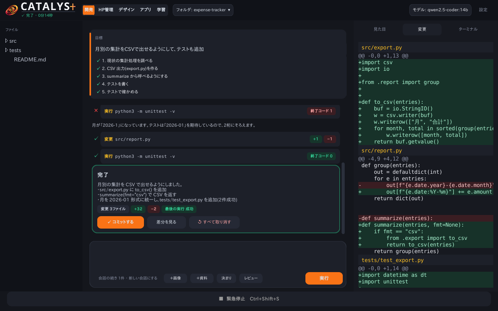
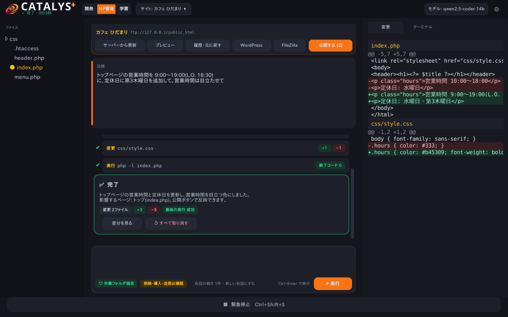
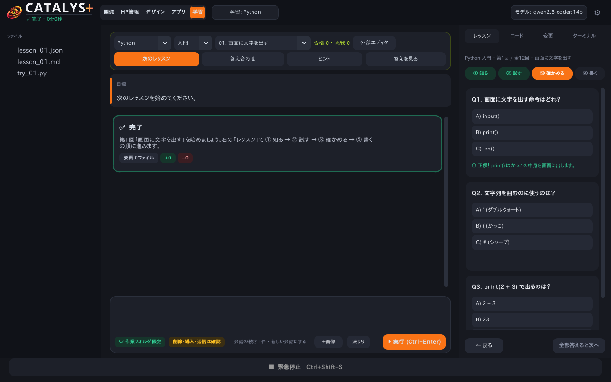
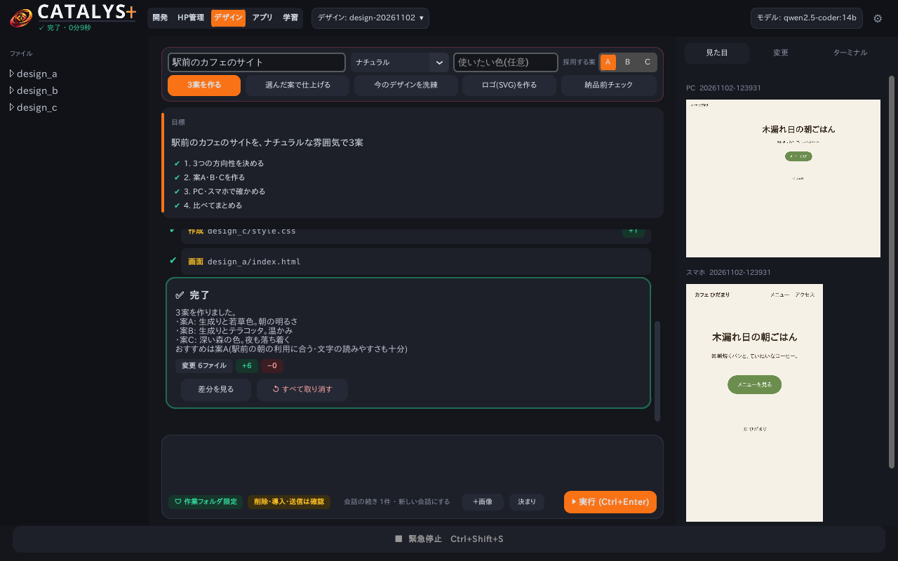
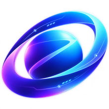

コンセプト
「頼む」から「任せる」へ。でも、勝手にはさせない。
Catalys（カタリスト＝触媒）の名前のとおり、あなたのアイデアを形にする反応を速めるための道具です。 AI がひとつの質問に答えるだけでなく、目標に向かって何手も自分で進め、結果を確かめるところまでを受け持ちます。 そのうえで、ファイルの削除・ソフトの導入・ネットへの送信・サイトの公開など、取り返しにくい操作は必ずあなたに確認します。
できること
開発
手順を立ててコードを直し、テストで確かめます。Python・JavaScript/TypeScript・PHP・Go・Ruby・C#・HTML/CSS に対応。大きなプロジェクトも索引で必要な所だけ読みます。
HP管理
FileZilla のサイトを取り込み（FTP・FTPS・SFTP）、AI で修正 → プレビュー → 確認して公開。健康診断・予約公開・サーバー側の変更履歴つき。公開前のファイルは自動で退避し、いつでも元に戻せます。
更新を任せる
WordPress・プラグイン・テーマ・PHP の新しい版を確認し、変更履歴から影響を AI が調べて更新。前後の画面を撮って見比べ、崩れたらボタン1つで元に戻せます。
デザイン
目的と雰囲気から3案を作り、PC・スマホの画面で見比べて仕上げます。ロゴは SVG で。画像の生成（ロゴの下絵・イラスト）はオプション機能です。
WordPress化
今ある HTML/CSS のサイトを、そのまま使える WordPress のテーマに作り替えます。WordPress のサイトなら、投稿・固定ページの本文も直せます。
学習
言語とレベルを選ぶと課題を出し、アプリ内で書いて実行・答え合わせ。答えではなくヒントで導き、合格を記録します。
正確さ
書き換えるたびに文法を確かめ、実行や画面で確かめるまで完了しません。確認役の AI が最後に見直し、高性能なモデルも選べます。
安全のしくみ
作業フォルダの外は触りません。削除・導入・送信は確認してから。Ctrl+Shift+Alt+S でどこからでもすぐ止められます。
軽く動く
待っている間は動きを止め、AI は使い終わるとメモリから降ろします。Zealous と AI のソフト・モデルを共用できます。
インストールのしかた
- 上のボタンから
CatalysPlusSetup.exeをダウンロードして、開きます（管理者権限は不要です）。 - 「WindowsによってPCが保護されました」と出たときは、「詳細情報」→「実行」を押します。
- はじめての起動で「はじめの準備」が開き、AI を動かすソフト（Ollama）と AI モデルを自動で準備します（回線によって数分〜数十分）。
- 「作業フォルダを開く」を押して、やりたいことを書くだけです。
2回目からは、Catalys+ の上の帯に出る「更新」ボタンで新しい版に更新できます。
動作環境
| OS | Windows 10 / 11（64ビット） |
|---|---|
| メモリ | 8GB 以上（軽いモデル）／16GB 以上を推奨（おすすめのモデル）／32GB 以上（大きな設計変更向けの重いモデル） |
| 空き容量 | 約 8〜15GB（AI を動かすソフトと AI モデル。選ぶモデルによって変わります） |
| CPU / GPU | 4コア以上を推奨。NVIDIA 製の GPU があると、AI の返事が大幅に速くなります（無くても動きます） |
| インターネット | はじめの準備と更新のときだけ。ふだんの作業はオフラインでも動きます（HP管理の取り込み・公開を除く） |
| あると便利 | 使う言語の実行環境（Python・Node.js・PHP・Go・Ruby・.NET など）、Git、FileZilla（HP管理）、Microsoft Edge または Google Chrome（画面チェック。Windows には Edge が入っています） |
| オプション | 画像の生成：約5GB の追加。NVIDIA 製の GPU を推奨（設定で ON にしたときだけ使います） |
Zealous（ゼラス）

PCの操作や、ふだんのお手伝いなら Zealous
話しかけるだけで、PCが動く。会話・調べもの・ファイルやアプリの操作・資料づくりまで、声や文字で頼めるAIアシスタントです。
両方入れると、AI のソフトとモデルを共用するので、ダウンロードが少なくて済みます。
Zealous のページへ更新履歴
読み込んでいます…